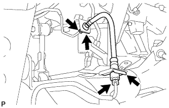

リヤレフト フレキシブル ホース（4WD） 取り付け |
| 1. リヤレフト フレキシブル ホース取り付け |
|  |
ブレーキチューブのユニオン2個をリヤブレーキフレキシブルホースLHに仮締めする。
新品のクリップ2個で、リヤブレーキフレキシブルホースLHをフレキシブルホースブラケットに取り付ける。
ユニオンナットレンチ10を使用して、ブレーキチューブのユニオン2個を本締めする。
| 2. ブレーキフルードエア抜き |
ブレーキフルードのエア抜きを行う。
| 3. ブレーキフルード漏れ点検 |
| 4. リヤタイヤ取り付け |